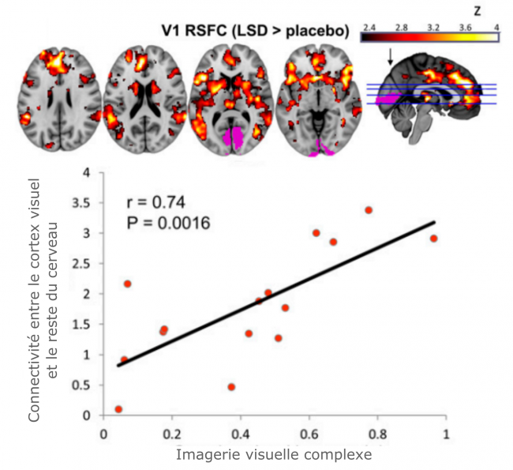
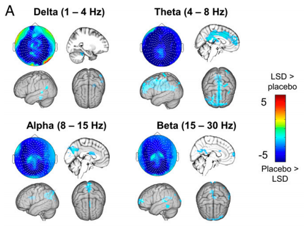

This Monday, a new chapter opened in the tumultuous history of lysergic acid diethylamide (LSD), whose psychedelic effects – “soul-revealing,” in Greek – were discovered in 1943 by chemist Albert Hofmann (1906-2008).
Although psychedelic substances like mescaline, datura, or psilocybin have been used for millennia in various parts of the world (India, South America), their neurobiological mode of action remains mysterious, and LSD is no exception.
While it is known that they involve the serotonergic system (like MDMA or antidepressants), the link between these chemical changes and the observed cognitive effects remains almost unknown.
How can such small doses (a few dozen micrograms) cause such profound changes in consciousness, alter the perception of colors, sounds, and others, or generate those strange “revelations” that sometimes resemble personal, professional, or even spiritual points of no return?
Animals on LSD
This is the question a group of neuroimagers and British psychiatrists attempted to answer, aided by a crowdfunding campaign launched in 2015.
Since the scandal caused in the 1960s at Harvard by the research of Timothy Leary (proponent of “therapeutic LSD” imprisoned under Nixon’s presidency), the substance had been almost exclusively administered to animals (and occasionally to a few communists tortured in CIA secret laboratories).
In animals, LSD is typically considered from a pathological rather than a therapeutic angle – namely, as a model of “induced psychosis” useful for mimicking certain aspects of schizophrenia.
Crowdfunding to the Rescue
LSD and psychedelics have thus been out of the scientific and clinical psychology perimeter for nearly 50 years, despite the continued interest of intellectuals like Sartre, Foucault, Huxley [PDF], or Castaneda [PDF].

However, with the advent of cognitive neuroscience and the discovery of ketamine’s antidepressant potential in the early 2000s, it seemed inevitable that a few “daredevils” would eventually succumb to curiosity and decide to scrutinize LSD using new neuroimaging tools like MRI and magnetoencephalography.
This has been achieved thanks to the crowdfunding employed by researchers David Nutt, Amanda Feilding, and Robin Carhart-Harris to bypass the reluctance of traditional funding agencies and conduct the first neuroimaging experiment entirely dedicated to LSD.
About Twenty Testers
Renowned psychiatrist David Nutt is known for his radical stance against excessive alcohol consumption in the UK and for his unusual discourse on certain drugs like MDMA and THC.
Although his approach has sparked intense debates within the scientific community and among some users, his method has just borne its first fruits: a publication in the journal of the American Academy of Sciences (PNAS).

About twenty individuals participated in a carefully crafted protocol combining MRI (for the spatial localization of brain activities) and magnetoencephalography (for their temporal characterization).
To isolate the activities specifically modified by LSD, each participant had to undergo the entire protocol twice:
- After ingesting the substance;
- After ingesting a biologically inactive placebo.
During each session, rest periods alternated with listening to music or watching silent films. For this first publication, only the rest periods were analyzed, but they are already rich in information.
“Seeing” with Eyes Closed
At very small doses (less than 50 micrograms), LSD simply produces a feeling of euphoria, stimulates creativity, or heightens perception, making reality appear more beautiful and meaningful, but it does not necessarily induce hallucinations in the strict sense of the term.
In contrast, at the intermediate dose used in the study (75 micrograms), sensitive users already experience complex, dynamic, and colorful visual imagery, mainly perceptible in darkness. With a few distortions, the external world appears normal when the eyes are open, while rich hallucinations manifest as soon as the eyelids close.
To explain this phenomenon, the researchers analyzed the “functional connectivity” of different brain areas [PDF].
They found that the coupling of activities between the primary visual area V1 (in pink) and the rest of the brain (red-yellow areas) was significantly enhanced by LSD – and this enhancement correlated with the intensity of the hallucinations reported by the subjects.

These results suggest that the substance may allow us to “see” what is happening in our own brain by disinhibiting certain “reentrant” connections via type 5HT2A serotonergic receptors.
According to Robin Carhart-Harris, leader of the study:
“With LSD, neural networks partially lose their integrity. Brain systems become less segregated, and different networks start to merge with each other. Overall, the brain becomes more connected and operates more flexibly.”
New Horizons
The analysis of electrophysiological signals (MEG) also shows that LSD induces a general decrease in the power of electromagnetic oscillations on the scalp surface, coupled with an acceleration of the alpha rhythm.
This rhythm is directly linked to attentional processes, and a popular hypothesis suggests it is involved in the filtering of information processed by our brain. If replicable and robust, these unexpected results will be thoroughly examined, cited, and commented on in the near future.
Underlying these findings, David Nutt and Robin Carhart-Harris’s work provides a more scientific foundation for an old hypothesis proposed by Aldous Huxley in “The Doors of Perception” [1954, PDF], an influential book that Jim Morrison used to name his band (“The Doors”).
According to Huxley (also author of “Brave New World”), psychedelics suppress a persistent tendency of our brain to prioritize the processing of what is useful for survival and reproduction, at the expense of the countless other sources of information that surround and constitute it.
By weakening the multiple filters that normally force our thinking to stay “usefully glued” to reality, LSD thus opens refreshing horizons to consciousness. Among these are the filters that usually prevent us from “seeing” the dynamic content generated by our own brain!
“Dissolving the Ego” in a Scanner?
Already astounding on a perceptual level, the action of LSD does not stop at “closed-eye” hallucinations, nor even at those – more or less disturbing – that persist with higher doses when the eyes are open.
If this were the case, painting and cinema could almost transcribe the experience and allow the novice to grasp its essence. But with higher doses and in certain contexts, LSD and other indolic hallucinogens facilitate the emergence of a state impossible to describe verbally or pictorially.

Some call this drastic alteration of affective, spatial, and temporal relationships with reality “ego dissolution.”
For Dr. Carhart-Harris:
“The phenomenon is often accompanied by new insights about ourselves, our journey, our relationships with others, and the world in general. In fact, it goes hand in hand with spiritual and mystical feelings.”
These extremely intimate experiences often lead to a more serene apprehension of death, making LSD useful for relieving some terminally ill patients, and they justify the use of the term “entheogen” (which “brings one closer to the divine”) to describe the action of psychedelics – whereas more superficial drugs like MDMA are simply called empathogens (which “bring one closer to others”).
Highly Subjective Experiences
Although the spiritual dimension of LSD is a priori foreign (and somewhat contrary) to the premises of scientific reasoning, the study authors still wanted to know if “ego dissolution” had a neurobiological counterpart in their data.
To do this, they cross-referenced the quantitative questionnaires filled out by the subjects (see below) with the various brain signals collected.

MRI signal analyses confirm what has already been observed in consumers of ayahuasca and psilocybin, namely that there appears to be a correlation between feelings of “ego dissolution” and the modification of functional coupling in three structures belonging to a “default mode network” connected repeatedly to self-referential thinking and the concept of “self.”

Furthermore, electrophysiological data suggest that this dissolution is accompanied by large-scale desynchronization of alpha rhythms, possibly corresponding to the suppression of certain inhibitory mechanisms active in so-called “normal” states of consciousness.
Without prejudging the quality of the analyses conducted, there is, however, reason to be slightly skeptical about the possibility of inducing (and quantifying) genuine “ego dissolution” in a scanner with such moderate doses of LSD.
The interpretation of the results is subject to caution, especially since unlike visual hallucinations (potentially quantifiable by rigorous tests), spiritual feelings are highly subjective and personal, making them difficult to objectify through a questionnaire.
At the Border between Science and Spirituality
In conclusion, research on LSD undeniably holds great potential for fundamental neuroscience and psychiatry, but the excessive rationalization of the psychedelic experience also carries a double risk.
On the one hand, the association between psychedelic states and brain activities might suggest that the former are explained by the latter, which is both false and illusory. It is crucial to remember that researchers interpret correlations (between mental and brain states) that never constitute proof of causality and do not exhaust the richness of the associated experiences.
On the other hand, when neuroimaging looks at meditation, religious fervor, or psychedelics, it sometimes gives the impression of mixing genres and blurring boundaries that generally allow scientific rationality and spirituality to protect each other. The foremost of these boundaries is perhaps the distinction between the quest for objective truth and the quest for meaning, which occurs in the realm of subjectivity.
A Hint of Prevention
Although the biological toxicity of LSD is considered almost nil (unlike most synthetic drugs, including MDMA), its potential psychological toxicity should not be overlooked. While LSD does not deteriorate physical or mental health at the population level (there is even a tendency towards the opposite), its consumption can cause problems at the individual level.
Firstly, it can sometimes reveal latent schizophrenia or other psychiatric disorders in young subjects [PDF].
Secondly, LSD is more frequently associated than other psychedelics with the occurrence of disorders known as hallucinogen-persisting perception disorders, including a temporary resurgence of symptoms normally related to acute consumption (the famous “flashback” or acid flashback), visual disturbances (such as the reduced ability to discriminate colors), and various emotional instabilities.
Thirdly, by temporarily expanding consciousness, the psychedelic experience sometimes leads the individual to consider new questions and new representations of the self, the world, and others. Currently considered beneficial in the long term, these events can be disorienting in the short term for the user and their surroundings, especially if the hallucinogens are poorly understood (hence the usefulness of disseminating scientific knowledge on the subject).
Besides the fact that taking LSD remains perfectly illegal, it can occasionally be harmful, especially for those under 25, severely hypertensive individuals, and more generally when it occurs in emotionally negative contexts.
Simultaneous ingestion of large quantities of stimulants or alcohol is strongly discouraged (as it facilitates the occurrence of paranoid episodes and the disinhibition of certain risky behaviors).
Thanks to Bahar Gholipour for providing the publication before its official release.